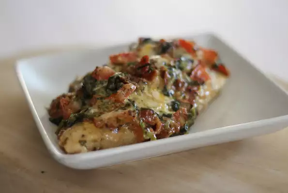

Stuffed Chicken Breasts with Bacon and Cream Cheese

Description
a tasty mixture of cream cheese, Cheddar, and cilantro adds delicious
flavor to bacon-stuffed chicken breasts.
Ingredients
- 1 pound bacon
- 6 (5 ounce) skinless, boneless chicken breast halves
- 1 (8 ounce) package cream cheese, softened
- ¾ cup shredded Cheddar cheese, divided
- ¼ cup chopped green onions, or to taste
- ¼ cup chopped fresh cilantro, or to taste
- 1 tablespoon minced garlic
Steps
-
Preheat oven to 350 degrees F (175 degrees C). Line a baking sheet and a
baking pan with foil.
- Lay bacon strips in a single layer on the prepared baking sheet.
-
Place bacon in the preheated oven and cook until browned and crisp,
about 15 minutes. Drain bacon slices on paper towels and chop. Keep the
oven on.
-
Slice chicken breasts horizontally, without going all the way through.
-
Combine cream cheese, 1/4 cup of Cheddar cheese, green onions, and
cilantro in a bowl. Add chopped bacon and mix to combine.